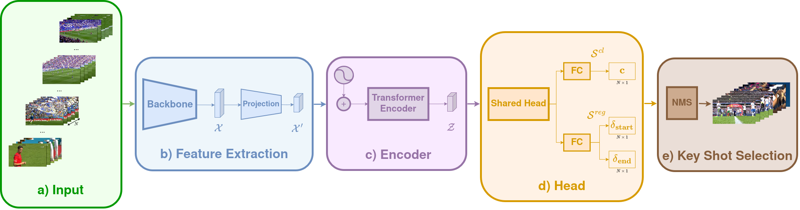

<div class="overlay"></div>
<div class="container">
    <div class="row">
        <div class="col-xl-12 mx-auto text-center">
            <h1>SoccerHigh: A Benchmark Dataset for Automatic Soccer Video Summarization</h1>
        </div>
        <div class="col-md-10 col-lg-8 col-xl-7 mx-auto">
        </div>
    </div>
</div>


<div class="col-xl-10 col-lg-8 offset-lg-1">

    <!-- Testimonials -->
    <section class="testimonials text-center">
        <div class="container">
            <div class="row">
                <div class="col-lg-4 text-center" style="">
                    <div class="testimonial-item mx-auto mb-5 mb-lg-0">
                        <h3>
                            <a href=""
                               style="text-decoration: none;">
                                Artur Díaz Juan
                            </a>
                        </h3>
                        <p class="font-weight-light mb-0"></p>
                    </div>
                </div>
                <div class="col-lg-4 text-center">
                    <div class="testimonial-item mx-auto mb-5 mb-lg-0" style="width: 109%">
                        <h3>
                            &nbsp;
                            <a href="https://www.upf.edu/web/coloma-ballester"
                               style="text-decoration: none;">
                                Coloma Ballester
                            </a>
                        </h3>
                        <p class="font-weight-light mb-0"></p>
                    </div>
                </div>
                <div class="col-lg-4 text-center">
                    <div class="testimonial-item mx-auto mb-5 mb-lg-0">
                        <h3>
                            <a href="https://www.upf.edu/web/gloria-haro"
                               style="text-decoration: none;">
                                Gloria Haro
                            </a>
                        </h3>
                        <p class="font-weight-light mb-0"></p>
                    </div>
                </div>
            </div>
            <div class="row">
                <div class="offset-lg-3 col-lg-6 padtop" style="padding-bottom: 2rem">
          <span class="align-middle">
            <p class="mylead2">
                <a href="https://www.upf.edu/web/etic" style="color:black">Universitat Pompeu Fabra,<br>Barcelona, Spain</a><br>
                <h5 class="mx-auto text-center" style="color: black">In review</h5>
                <h4 class="mx-auto text-center">
                   <a target="_blank" href=" ">[Paper]</a> &nbsp;&nbsp;&nbsp;&nbsp;
                   <a target="_blank" href="https://github.com/IPCV/SoccerHigh">[Code]</a> 	&nbsp;&nbsp;&nbsp;&nbsp;
                   <a href="data/">[Data]</a>
                </h4>
          </span>
            </div>

            </div>
        </div>        
    </section>

    <!-- Image Showcases -->
    <!-- UNCOMMENT
    <div class="row justify-content-center">
        <div style="text-align: center;">
            
        </div>
    </div>
    </br>
    -->
    <!-- <h2 style="text-align: center">Abstract</h2> -->
    <!-- UNCOMMENT
    <p class="lead mb-0" align="justify">
        Role classification of players according to their uniform or playing kit in unseen soccer game scenes remains a challenging problem. While multiple methods have being proposed for this task, both handcrafted and deep learning methods have been designed to work on individual games only. Moreover, several of them require costly annotations, constrain the problem to two categories, and/or work on a multiple camera setting. We propose two weakly supervised approaches for role classification of soccer players that address these problems and classify them in five categories, namely, referee, outfield players from team 1 and team 2, and goalkeeper A and goalkeeper B, that work for any (unseen) game. Both approaches learn a robust representation of playing kits using metric learning with weakly annotated data. Our first approach, called embedding clustering, calculates player kit embeddings in an unseen game and clusters them also leveraging the field locations of the players. Our second approach, TransKit, is a transformer architecture designed to generalize across multiple unseen games from a small set of training games. TransKit is trained on different possible games using combinatorial data augmentation. Our methods obtain an accuracy of 97.45% and 90.45% in our annotated benchmark of unseen games with seen uniforms during training, respectively.
    </p>
    </br>
    -->
    <!--
    <div class="mx-auto">
        <br>
        <h5>Citation</h5>
        <pre class="hightlight" style="background-color:rgba(0,0,0, 0.1)"><p class="mb-0" align="justify">@inproceedings{cartas2024PlayerClassification,
author = {Cartas, Alejandro and Ballester, Coloma and Haro, Gloria},
title = {Two Weakly Supervised Approaches for Role Classification of Soccer Players},
publisher = {Association for Computing Machinery},
address = {New York, NY, USA},
booktitle = {Proceedings of the 7th International ACM Workshop on Multimedia Content Analysis in Sports},
series = {MMSports '24} pages = {93–102}, --> <!-- UNCOMMENT
location = {Melbourne, Australia},
year = {2024},
}
</p></pre>
    </div>
-->
<!--     <div class="mx-auto"> UNCOMMENT
        <br>
        <h5>Video presentation at ACM MMSports 2024</h5>
    </div>
       <iframe width="100%" height="400" src="https://www.youtube.com/embed/1F-GrXCYCCw?autoplay=1&mute=1" title="A Graph-Based Method for Soccer Action Spotting Using Unsupervised Player Classification" frameborder="0" allow="accelerometer; autoplay; clipboard-write; encrypted-media; gyroscope; picture-in-picture" allowfullscreen></iframe>


    <div class="mx-auto">
        <br>
        <h5>Acknowledgements</h5>
        <p class="lead mb-0" align="justify">            
            The authors acknowledge support by MICINN/FEDER UE project, ref. PID2021-127643NB-I00, and the support of the European Commission, Horizon Europe Programme, EMERALD Project 101119800.
    </div>
    
  <p align="center" float="left">
      &nbsp;&nbsp;
      
  </p>

</div> -->